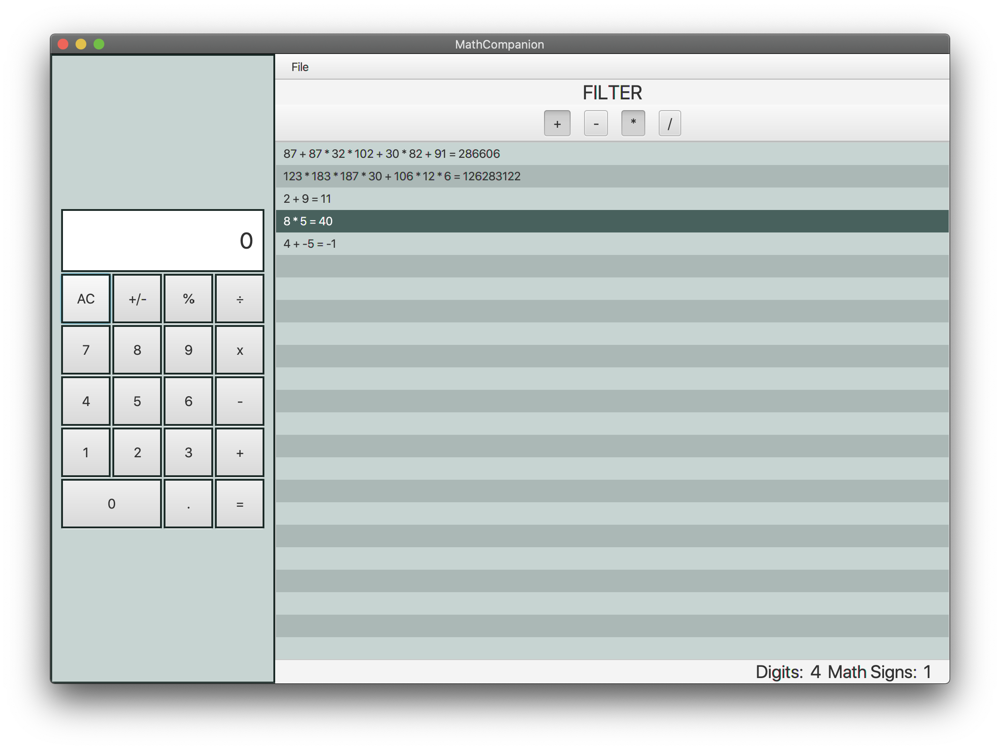

| The main things are calculator and list of all arithmetic expressions in your data file. All expression will be automatically solved by code. | |
|  | You can sort all your expression by plus, minus, multiplication and division, or you can even combine them to create more complicated filtered list. |
| You can add, as well as edit and delete expressions. |